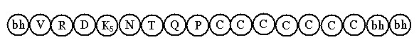
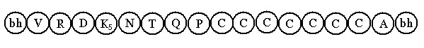

Bài 4 LỘ NHÃN MÔN CẢNH RẤT LỚN B- Lộ nhãn môn cảnh rất lớn chót đổng lực Tiến trình sinh diệt của tâm lộ nhãn môn cảnh rất lớn chót đổng lực như sau: 1- Biểu đồ.  2- Ký hiệu. V: Atītabhavaṅga: Hữu phần Vừa qua 3- Phân tích. Tâm lộ này có được: - Sát-na: 12 sát-na tâm khách. 4- Biện giải. Lộ này tuy có cảnh rất lớn, nhưng không có tâm Na cảnh là vì: Đối với chúng sanh nào có tâm không ái luyến cảnh sắc, tức là cảnh sắc dù có cực tốt nhưng không thể hấp lực được tâm, khi ấy tâm đổng lực không "níu kéo" cảnh sắc trở thành cảnh khắn khít, như trường hợp người không thích màu hồng cho dù màu này có rực rỡ cũng không làm cho y dính mắc, hay như vị Phạm Thiên không đắm nhiễm trước cảnh sắc chẳng hạn. Do đó, cảnh lực không đủ mạnh để ngăn cản cảnh Chủ sanh khởi, dù rằng nó còn tuổi thọ đến hai sát-na và sau khi đổng lực thứ bảy diệt đi, cảnh Chủ cắt đứt được cảnh sắc, làm sanh khởi tâm hữu phần cơ bản. C- Lộ nhãn môn cảnh rất lớn chót hữu phần Khách. 1. Định nghĩa . Hữu phần Khách dịch từ chữ āgantukabhavaṅga. Āgantuka là người mới đến, bhavaṅga là hữu phần. Đây là loại tâm đặc biệt, không phải là loại hữu phần cơ bản trong tâm lộ. Làm việc Tục sinh (paṭisandhikiccaṃ) có 19 tâm, nhưng mỗi chúng sanh chỉ có được một trong số 19 tâm Tục sinh mà thôi, sát-na kế tiếp tâm Tục sinh (cũng chính loại tâm này) sanh khởi để duy trì kiếp sống của chúng sanh, có tên gọi là bhavaṅga (hữu phần), vì có phận sự "duy trì đời sống của dòng tâm thức". Trong 19 tâm Tục sinh, có 9 tâm đưa tái sinh về cõi Đáo đại (là 5 tâm quả Sắc giới + 4 tâm quả Vô sắc giới), 10 tâm còn lại đưa tái sinh về cõi Dục. Hữu phần Khách chính là 1 trong 10 tâm hữu phần Dục giới ấy, nhưng không phải là hữu phần cơ bản. Tại sao? Vì hữu phần cơ bản nhận cảnh Chủ, còn hữu phần này lại nhận cảnh riêng (không là cảnh Khách cũng không là cảnh Chủ), có loại thọ riêng, nên gọi là hữu phần Khách. Hữu phần Khách vừa đóng vai trò CHỦ lại vừa là người KHÁCH, có ví dụ như sau: có người đi đến thăm bạn, gặp lúc bạn vắng nhà, vừa lúc ấy lại có người khác đến tìm bạn của y, y đóng vai trò CHỦ để tiếp người khách mới, như vậy y vừa là CHỦ cũng vừa là KHÁCH. 2. Biểu đồ tâm lộ.  A: āgantukabhavaṅga: Hữu phần Khách. Trong tâm lộ này có được: - Sát-na: 12 sát-na tâm khách. 3. Luận về hữu phần Khách. a) Nhân sanh hữu phần khách. Hữu phần khách sanh lên do đủ ba nhân: Người Dục giới tái tục bằng tâm đại quả hỷ thọ. (vipākasomanassasahagatacittaṃ) b) Lý giải. Phận sự hữu phần khách. Phận sự của hữu phần Khách là hóa giải hai xung lực của đổng lực và hữu phần cơ bản. Cảnh sắc chiếu vào dòng hữu phần, làm khởi sanh tâm lộ, tâm lộ có đổng lực sân. Đổng lực sân có sức mạnh tác động đến dòng hữu phần tạo điều kiện cho tâm Na cảnh sanh khởi. Đối với người tục sinh bằng tâm quả xả thọ thì điều này dễ dàng, nhưng đối với người tục sinh bằng tâm quả hỷ thọ lại không được, vì tâm Na cảnh chính là tâm hữu phần (hỷ thọ) nhận cảnh của đổng lực đồng thời có liên hệ với thọ (vedanā) đổng lực, mà đổng lực là thọ ưu. Hai loại thọ này đối nghịch nhau nên Na cảnh không thể sanh khởi. Đối với đổng lực sân, nếu có Na cảnh thì Na cảnh phải là xả thọ. Vì trong ba loại thọ: ưu - hỷ - xả, thì xả thọ là loại xả quân bình, nghĩa là nó có thể nối tiếp theo ưu thọ hoặc hỷ thọ, nhưng giữa thọ ưu và thọ hỷ thì không có sự nối tiếp được. Vào thời điểm này sức mạnh Ưu thọ tác động mạnh, nhưng tâm hữu phần cơ bản hỷ thọ không thể sanh lên. Một loại tâm khác sanh lên để "hòa giải" hai xung lực, đồng thời "bắt cầu" cho hữu phần cơ bản sanh khởi, sát-na này có tên gọi là āgantuka (người vừa đến), ví như hai người đang xung đột, chợt thấy người lạ đến lập tức im lặng. Thuật ngữ Siêu Lý gọi sát-na này là hữu phần Khách (āgantukabhavaṅga), bản thân nó cũng là loại tâm hữu phần nhưng không phải hữu phần cơ bản trong tâm lộ. Để thực hiện phận sự "hòa giải" nó phải là xả thọ (như đã trình bày ở trên). Tóm lại loại tâm quả nào sinh lên để điều hòa ưu và hỷ thọ, đồng thời giúp cho hữu phần cơ bản hỷ thọ dễ dàng sinh lên nối tiếp, tâm ấy gọi là hữu phần Khách. Nói cách khác, tâm hữu phần Khách chính là loại tâm Na cảnh xả thọ, chỉ khác là: "Na cảnh hưởng cảnh của đổng lực", còn "hữu phần Khách nhận cảnh riêng của mình", cảnh ấy là 1 trong 3 cảnh Chủ ở những kiếp trước trước. Bắt cảnh Dục ra sao? Theo quy luật về tâm (cittaniyāma), khi có cảnh cực tốt thì sát-na Quan sát chính là tâm Quan sát thọ hỷ, khi tâm Quan sát là thọ hỷ thì Na cảnh cũng phải thọ hỷ. Trường hợp cảnh rất lớn lại cực tốt, có đổng lực sân thì Na cảnh hỷ thọ không thể sanh lên, nên chỉ còn là tâm hữu phần Khách. Đối với cảnh rất lón nhận cảnh tốt hay cảnh bất toại thì tâm Quan sát sẽ là xả thọ (upekkhāvedanā). Trường hợp có đổng lực sân thì sẽ có tâm Na cảnh xả thọ, không có hữu phần Khách. Đối với cảnh lớn dù bắt cảnh cực tốt, cảnh tốt hay cảnh cực xấu đều khởi lên hữu phần Khách được cả. Vì: - Khi ấy cảnh sắc chỉ còn tuổi thọ là một sát-na hoặc vừa diệt đi (đối với cảnh lớn có 3 HPVQ). - Cảnh lớn không thể có tâm Na cảnh, sẽ nói rõ trong phần lộ nhãn môn cảnh lớn chót hữu phần Khách. Như vậy đối với cảnh rất lớn phải là cực tốt, còn cảnh lớn thì như thế nào cũng được. Hữu phần Khách là loại tâm nào? Với phận sự hòa giải hai đối lực Hỷ và Ưu thọ, đồng thời cũng là loại tâm hữu phần. Như vậy, hữu phần Khách chính là những tâm Tục sinh xả thọ. Ngài Luận Sư Anuruddha có nêu trong bộ Thắng Pháp Tập Yếu Luận: " tâm hữu phần Khách chính là hai tâm Quan sát xả thọ". Những vị Giáo Thọ sư khác đề cập thêm bốn tâm đại quả xả thọ, cả hai ý kiến trên đều phù hợp nhau chứ không có gì sai khác. Khi đề cập đến hai tâm Quan sát xả thọ, Ngài Anuruddha nêu lên phần cơ bản phổ thông, tức là thông thường hai tâm Quan sát xả thọ ở vị trí hữu phần Khách dễ dàng hơn, còn bốn tâm đại quả xả thọ chỉ xuất hiện trong những trường hợp đặc biệt. Đổng lực sân là loại tâm bất thiện, nên chỉ có thể cho tâm quả vô nhân, hai tâm Quan sát xả thọ cũng là loại tâm quả vô nhân, chỉ khác nhau: tâm Quan sát xả thọ quả thiện thì nhận cảnh tốt, còn tâm Quan sát xả thọ quả bất thiện thì nhận cảnh bất toại. Do đó, hai tâm Quan sát xả thọ sẽ dễ dàng sanh kế tục đổng lực sân hơn 4 tâm đại quả xả thọ, vì 4 tâm này là tâm quả hữu nhân do tâm thiện Dục giới tạo ra. Lại nữa, người Khổ không có tâm đại quả. Người Nhị nhân và người Lạc vô nhân chỉ có 2 tâm đại quả xả thọ không có trí . Người Tam nhân, người Sơ quả và người Nhị quả có đủ 4 tâm đại quả xả thọ (không đề cập đến người Tam quả cùng Tứ quả, vì hai bậc này đã trừ tuyệt tâm sân). Cả 4 hạng người nêu trên đều có 2 tâm Quan sát xả thọ. Mặt khác, hai tâm Quan sát xả thọ làm hữu phần Khách một cách phổ thông, nghĩa là đối với người tục sinh bằng tâm quả Hỷ thọ, khi có đổng lực sân thì dù ở cảnh nào (cảnh rất lớn, cảnh lớn, cực tốt, tốt hay bất toại) đều sanh khởi được cả. Riêng bốn tâm đại quả xả thọ làm hữu phần Khách chỉ sanh khởi trong những trường hợp đặc biệt, như: - Đối với người Nhị nhân, nếu đổng lực sân quá mạnh, bấy giờ hai tâm đại quả xả thọ ly trí sanh khởi để đảm nhận vai trò này. - Đối với người Tam nhân, khi sân lực mạnh tương đối thì sanh khởi một trong hai tâm đại quả xả thọ không có trí làm hữu phần Khách, khi sân lực cực mạnh thì chính một trong hai tâm đại quả xả thọ có trí đảm trách. Tóm lại, tâm hữu phần Khách là 6 tâm Tục sinh xả thọ. Vì sao cảnh cực tốt hay tốt lại phát sanh đổng lực sân? Đối với cảnh cực tốt hay tốt, thông thường phát sanh đổng lực hỷ thọ hoặc xả thọ, nhưng vẫn có thể khởi lên đổng lực sân là do: - Có "ấn tượng kinh hoàng", giờ liên tưởng lại phát sanh kinh sợ. Như người trước đây suýt chết vì lửa, nay thấy người đốt pháo bông vui chơi trong lễ hội y phát sanh lo sợ. - Do cảnh hiện khởi bất ngờ ngoài dự kiến, như có hành giả tu tiến thiền Chỉ tịnh (samādhi bhāvanā) chợt nhận thấy ánh sáng từ thân tỏa ra rực rỡ, cảm thấy kiếp đảm. - Do " tưởng tượng phong phú", như người đi lạc vào rừng ban đêm, chợt nghe tiếng hát du dương từ xa vọng lại, y kinh hoàng cho rằng "tiếng hát của loài yêu quái". - Do "pháp điên đảo" (vipallāsadhamma) chi phối, như khó chịu trước sự huy hoàng của kẻ thù. Vì sao hữu phần Khách không được kể là tâm Khách? Tuy cũng là hữu phần, nhưng tâm Na cảnh được kể là tâm Khách vì có liên hệ với cảnh, tứclà có phận sự hưởng cảnh dư tàn của đổng lực. Nói đến tâm lộ là nói đến hai loại cảnh: cảnh Chủ và cảnh Khách, tâm hữu phần Khách chẳng dính dấp chi đến 2 loại cảnh này. Tuy có phận sự hòa giải hai xung lực Ưu thọ và Hỷ thọ, nhưng sự hòa giải này như một sự tình cờ chứ không phải có chủ ý trước, giống như hai người đang tranh chấp, chợt im lặng vì có người thứ ba tình cờ xuất hiện, rồi sau đó mỗi người đi theo hướng riêng của mình. 4. Tổng kết. Lộ ngũ môn cảnh rất lớn với ba phương thức: chót Na cảnh, chót đổng lực và chót hữu phần Khách đã được trình bày. Điều cần ghi nhận là: Đối với cảnh rất lớn, cho dù diễn biến theo phương thức nào cũng chỉ có một hữu phần Vừa qua mà thôi và có 3 tâm lộ căn bản. -ooOoo- Ðầu trang | Mục lục | 01 | 02 | 03 | 04 | 05 | 06 | 07 | 08 | 09 | 10 | 11 | 12 | 13 | 14 | 15 | 16 | 17 | 18 | 19 | 20 | 21 | 22 | 23 | 24 | 25 |